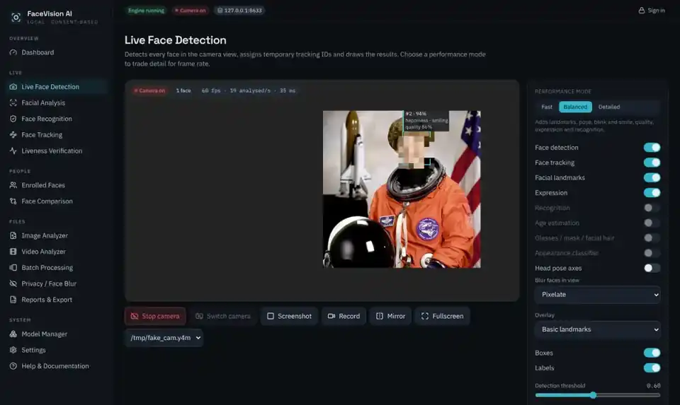

Offline face recognition, face detection and face blur app
Local, consent-based face detection, analysis, recognition and anonymisation.
What it is
FaceVision AI runs on your own computer with open models and works offline after setup. It never uploads faces anywhere. It is a FastAPI and React application with a modular computer-vision engine.
It detects and tracks faces in a webcam, photo, video or RTSP stream, measures landmarks, head pose, blinks, smiles and image quality, and can recognise people only if they were enrolled on your computer with their consent. A privacy toolkit blurs, pixelates or masks faces without any recognition at all.

Features
Face detection and tracking
Multiple faces, adjustable threshold, face count, FPS and latency, with temporary track IDs and enter/exit events.
Landmarks and analysis
478-point face mesh, head pose, eye state and blinks, smile, image quality and occlusion indicators.
Consent-based recognition
Consented enrolment, encrypted templates, 1:1 verification and 1:N matching, with Unknown for non-matches.
Face blur and anonymisation
Blur, pixelate or solid-mask faces in photos and video, with per-face selection and preview. No recognition needed.
Liveness checks
Random blink, turn and smile challenges plus passive photo/screen detection, with stated limits.
Photos, videos and batches
Annotated exports, entry/exit logs, background jobs with progress and cancellation, JSON/CSV/TXT reports.
REST API and WebSocket
A documented local API alongside the app, with interactive docs at /api/docs.
Desktop package
A PyInstaller app bundle is built and smoke-tested in CI.
Privacy and safety
- Everything stays on your computer: no cloud APIs, no accounts, no analytics.
- Enrolment requires confirming the person's informed consent.
- Face templates are encrypted with AES-256-GCM; enrolment photos are not kept.
- The camera starts only when you press Start, with a visible indicator.
- The server listens on 127.0.0.1 and rejects other hosts.
- No race, ethnicity, religion, health or similar inferences.
Quick start
Requirements: Python 3.10 to 3.13, Node.js 20+ and about 1 GB of disk space.
macOS / Linux
git clone https://github.com/Shahrukhalid/facevision-ai.git
cd facevision-ai
bash scripts/setup.sh
bash scripts/start.sh # opens http://localhost:8600Windows (PowerShell)
git clone https://github.com/Shahrukhalid/facevision-ai.git
cd facevision-ai
powershell -ExecutionPolicy Bypass -File scripts\setup.ps1
powershell -ExecutionPolicy Bypass -File scripts\start.ps1Setup builds the web app and downloads the default models (about 80 MB, checksum-verified).
Documentation
Frequently asked questions
Does FaceVision AI work offline?
Yes. After setup it runs on your own computer with open models and works offline. It never uploads faces anywhere, and a test fails the build if analysis makes any network connection.
Is face recognition consent-based?
Yes. Enrolment requires confirming the person's informed consent, and recognition only compares against people enrolled locally. It never searches the internet or other databases.
Can it blur faces in photos and videos?
Yes. The privacy toolkit blurs, pixelates or masks faces in photos and videos, with per-face selection, without any recognition.
Which systems does it run on?
macOS (Apple Silicon), Windows 10/11 and Linux, with Python 3.10 to 3.13.
How accurate is recognition?
On the AT&T Database of Faces (40 consenting volunteers, 400 images), SFace at the default threshold produced 0 false non-matches in 1,800 genuine pairs and 0.17% false matches in 78,000 impostor pairs. This is a small, controlled dataset, so expect lower accuracy on everyday photos.
What licence does it use?
The code is MIT licensed. Models keep their own licences; the optional InsightFace pack is non-commercial research only and is opt-in.
Should I use it for surveillance?
No. Do not use it for covert surveillance, and check the laws that apply to biometric data where you live.
Project links
More projects by Shahrukh Khalid
stark-os
Self-hosted multi-agent social media manager; every post needs your approval.
verilive
In-browser deepfake check for video calls; video never leaves your device.
nexonic-iptv
Free IPTV M3U playlists of legal, officially free live TV channels.
nexonic-iptv-v2
Self-hosted IPTV player and Xtream Codes server for free, legal TV.
nexonic-sentinel
Free GitHub App that triages issues, reviews PRs and merges safe dependency updates.
morphlive
Experimental local camera and voice-effects prototype (goal not achieved).